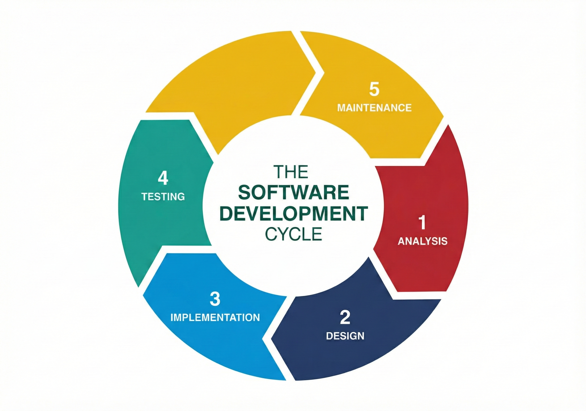

Este sitio web presenta un desglose detallado de las etapas fundamentales en el desarrollo de software. El ciclo de vida del software es un proceso estructurado que garantiza la calidad y eficiencia en la creación de programas informáticos.
